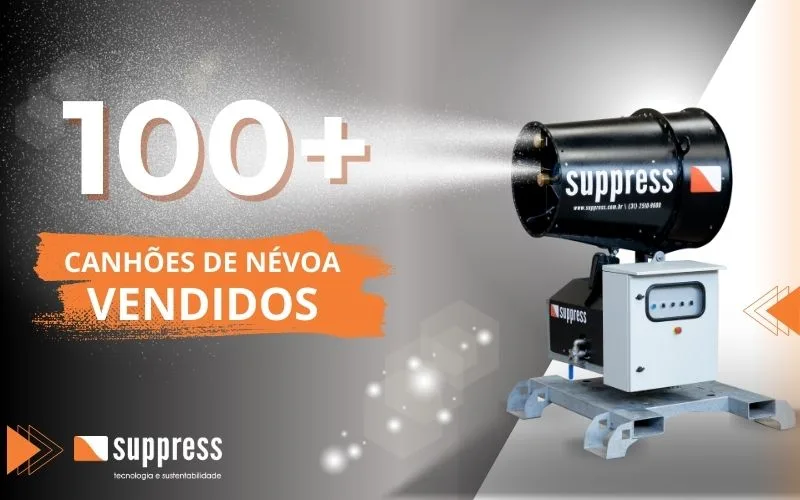

Suppress Celebra a Venda de Mais de 100 Canhões de Névoa para Abatimento de Particulado
Um marco que reflete o sucesso de uma tecnologia inovadora e sustentável, adotada por mineradoras, siderúrgicas, pedreiras e construtoras em todo o Brasil.

A Suppress alcançou um marco importante em sua trajetória: a venda de mais de 100 canhões de névoa para abatimento de particulado. O número reflete o sucesso de uma tecnologia inovadora e sustentável, adotada por empresas de setores como mineração, siderurgia, pedreiras e construção civil, todas comprometidas em melhorar a qualidade do ar e reduzir impactos ambientais.
O que são os canhões de névoa e como funcionam
Os canhões de névoa combatem o material particulado em suspensão por meio de técnicas de atomização. O equipamento cria uma névoa de microgotículas de água que se mistura às partículas de poeira, fazendo com que se depositem no solo e contribuindo para a limpeza do ar.
Essa tecnologia se mostra especialmente eficaz em ambientes industriais com grande geração de poeira, como extração, processamento e transporte de materiais. Entre os principais setores que adotam a solução, destacam-se:
- Mineração: a poeira fina gerada por perfuração e movimentação de solo representa preocupação constante, tanto ambiental quanto ocupacional
- Siderurgia: o manuseio e transporte de materiais sólidos gera quantidade significativa de poeira
- Construção civil e pedreiras: o transporte de material e detonações controladas criam grandes volumes de particulado
A principal vantagem da tecnologia está no abatimento eficiente de particulado com consumo racional de água, um recurso cada vez mais precioso. Além de reduzir a poluição do ar, os canhões de névoa melhoram as condições de trabalho e protegem as comunidades vizinhas às operações.
Benefícios para a saúde e o meio ambiente
1. Redução da poluição atmosférica
Os canhões de névoa capturam partículas em suspensão, reduzindo os níveis de poluição e protegendo a qualidade do ar em áreas industriais próximas a comunidades urbanas e rurais.
2. Melhoria da saúde ocupacional
A exposição prolongada à poeira causa doenças respiratórias graves, como silicose e bronquite crônica, especialmente em mineração e construção civil. Os canhões reduzem drasticamente a exposição dos trabalhadores a partículas nocivas, criando ambientes de trabalho mais seguros.
3. Uso sustentável de recursos
O equipamento pulveriza apenas a quantidade de água necessária para capturar o particulado em suspensão, promovendo sustentabilidade e reduzindo o desperdício de um recurso vital.
Aceitação de mercado e compromisso com a sustentabilidade
Desde o seu lançamento, os canhões de névoa Suppress conquistaram ampla aceitação no mercado como solução de alta performance. As empresas que adotam a tecnologia relatam não apenas benefícios ambientais, mas também ganhos operacionais, incluindo redução de custos de manutenção e menor exposição a penalidades ambientais.
A marca de mais de 100 equipamentos vendidos reafirma o compromisso da Suppress com a preservação ambiental e a promoção de um futuro mais limpo e saudável, uma tendência cada vez mais evidente diante da crescente conscientização ambiental de empresas e da sociedade.
Cada canhão vendido representa um avanço rumo a um ar mais limpo e a condições mais seguras para trabalhadores e comunidades.
Por que a engenharia nacional faz diferença
Um dos fatores que sustentam o crescimento da Suppress é o fato de ser uma fabricante 100% brasileira, com departamento de engenharia próprio. Isso significa que cada um dos mais de 100 canhões vendidos pôde ser ajustado às particularidades de cada operação, variando capacidade de bombas, configuração de bicos, vazão de névoa e granulometria da gotícula conforme a aplicação específica, seja ela mineração, siderurgia, portos ou construção civil.
Essa flexibilidade de engenharia contrasta com soluções importadas de catálogo fechado, que muitas vezes não podem ser adaptadas às condições específicas de clima, layout de pátio ou tipo de material movimentado em cada planta industrial brasileira. A proximidade entre fabricante e cliente também agiliza o suporte técnico e a manutenção, fatores decisivos para operações que não podem parar.
Os setores que mais adotaram a tecnologia
Ao longo dos mais de 100 equipamentos entregues, alguns setores se destacaram pela adoção consistente da tecnologia de nebulização:
- Mineração: desde a extração até o beneficiamento, os canhões de névoa são aplicados em britagem, pilhas de estoque, carregamento de caminhões e vias de acesso, como detalhado no artigo sobre aplicação em pilhas de materiais
- Siderurgia: pátios de matéria-prima, coque e sucata concentram grande geração de particulado, exigindo equipamentos de alta vazão e cobertura
- Pedreiras e britagem: operações de detonação controlada e processamento de rocha são fontes intensas e recorrentes de poeira fina
- Construção civil: demolições, terraplanagem e movimentação de entulho em grandes obras urbanas demandam controle rigoroso para reduzir incômodo à vizinhança
Em cada um desses setores, a escolha do modelo correto, do compacto SP-15 até os modelos de grande porte como o SP-150: depende da área a ser coberta, do volume de material movimentado e das características climáticas locais.
Impacto além do abatimento de particulado
Embora o foco principal dos canhões de névoa seja o controle de poeira em suspensão, a adoção em massa da tecnologia trouxe benefícios correlatos relatados pelas empresas clientes: redução de reclamações de comunidades vizinhas às operações, menor desgaste de equipamentos expostos a ambientes empoeirados, e ambientes de trabalho mais alinhados às exigências de saúde ocupacional. Esses ganhos colaterais frequentemente pesam tanto quanto o abatimento de poeira em si na decisão de investimento.
O próximo passo: 100 e além
Atingir a marca de 100 equipamentos vendidos não é um ponto final, mas um indicador de que a tecnologia nacional de canhões de névoa amadureceu e se consolidou como alternativa confiável a soluções tradicionais, como os canhões aspersores. Para empresas que ainda avaliam a transição, vale entender as diferenças técnicas entre as duas tecnologias no artigo sobre canhão de névoa x aspersores.
Conclusão
O marco de 100 canhões de névoa vendidos representa o compromisso da Suppress com a sustentabilidade e a melhoria da qualidade de vida. A empresa agradece a todas as empresas que adotaram essa tecnologia inovadora, reduzindo impacto ambiental e fortalecendo a responsabilidade corporativa em seus setores.
Perguntas Frequentes
O que diferencia os canhões de névoa Suppress de equipamentos importados?
A Suppress é fabricante nacional com engenharia própria, o que permite customização de equipamentos conforme a necessidade de cada operação, prazos de entrega mais previsíveis e suporte técnico e pós-venda em território brasileiro, sem depender de importação de peças ou assistência internacional.
Quais setores mais utilizam os canhões de névoa Suppress?
Mineração, siderurgia, pedreiras e construção civil são os setores com maior adoção da tecnologia, mas a solução também atende portos, terminais de granéis, usinas e, mais recentemente, agronegócio e eventos ao ar livre.
Como a marca de 100 equipamentos vendidos reflete a maturidade da tecnologia?
O número representa validação de mercado em diferentes setores e portes de operação, com equipamentos em funcionamento contínuo em condições industriais exigentes, o que reforça a confiabilidade e a durabilidade da engenharia desenvolvida pela Suppress.
Faça parte dessa transformação na sua operação
Fale com nossos engenheiros e descubra como os canhões de névoa Suppress podem se aplicar ao seu negócio.
Solicitar Proposta